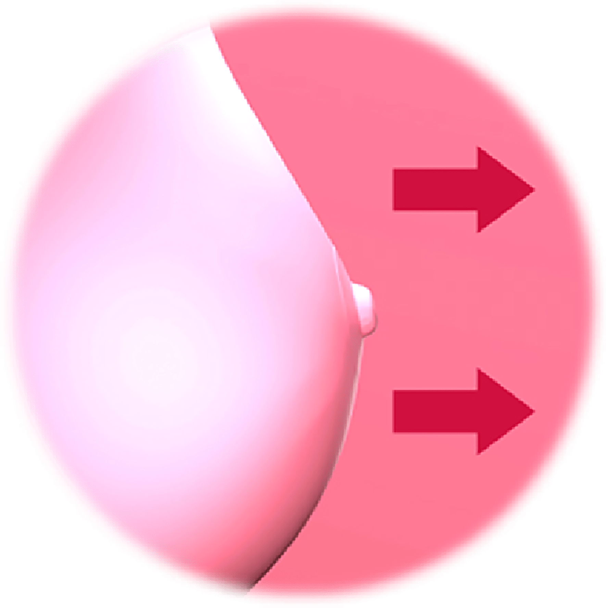
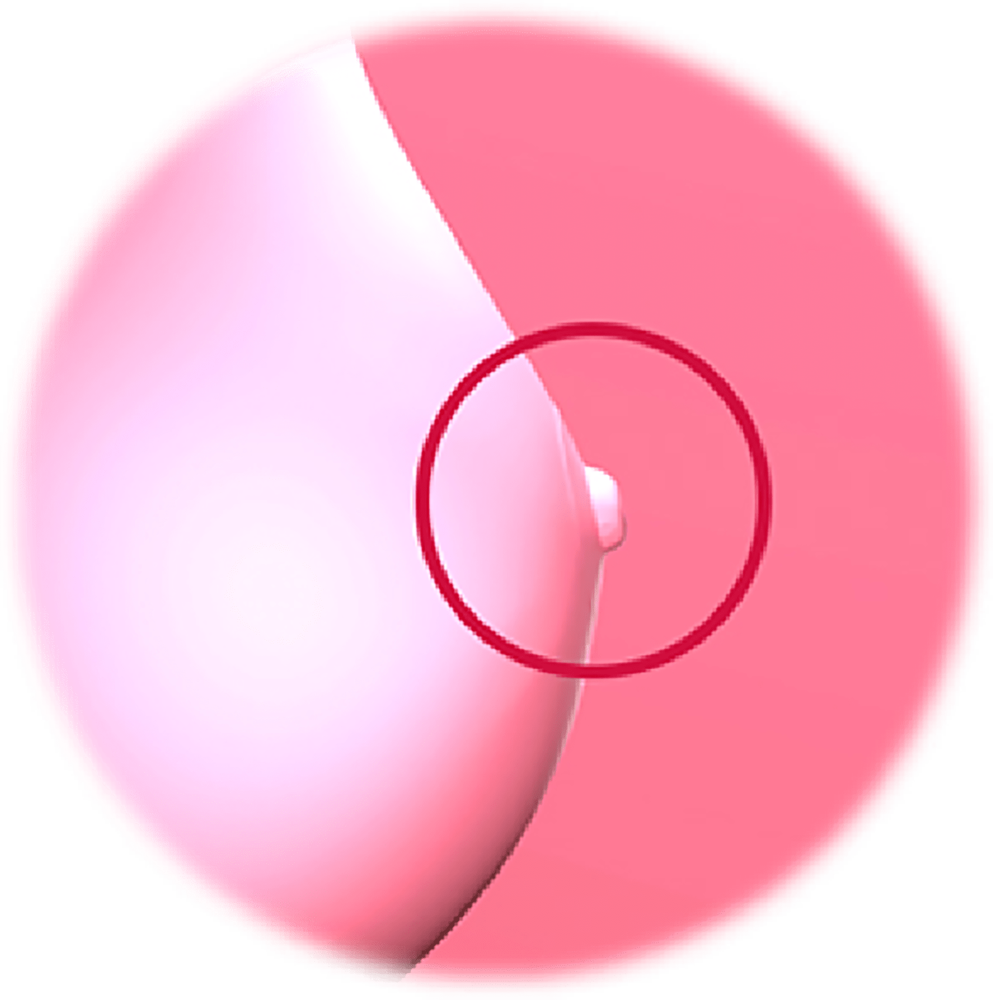

나를 위한 함몰유두 교정 레이저
나를위한 산부인과의
“함몰유두 교정 레이저”
는
의료진의 노하우와 기술력으로
돌출되지 않고 유방 조직 내로
함몰된 유두를 비수술적인 방법으로 교정해 드립니다
- 수술시간 30분 내외
- 회복기간 2주
- 입원여부 없음
- 마취방법 수면+국소마취
함몰유두란?

유두가 돌출되지 않고 유방조직 내로 함몰된 상태로
미관상 보기 좋지 않으며
유두 통증이나 유방울혈, 유선암의 원인
이 될 수 있고
대부분 유전적이며 양측성으로 생깁니다.
함몰유두의 발생 원인
선천적으로 유두 아래에 결합 조직과 유선이 발달하지 않아
받침대 역할을 해줄 수 있는 조직이 없어 발생하거나
보통 사람들에게는 없는 섬유밴드가 존재해
유두를 안으로 당김으로써 함몰유두가 발생합니다.
함몰유두의 종류
-

오목 유두 항상 들어가 있는 것이 아니라
자극 을 주거나 흡인 을 하는
경우에
돌출되는 경우 -

함입 유두 자극 을 주더라도
항상 들어가 있는 경우
나를위한 하이브리드 레이저

CO2 FRACTIONAL 레이저가 360도 회전하면
질 점막을 자극해 콜라겐을
포함한 여러 가지
물질들이 재합성 하도록 유도하는 원리입니다.
민감한 부위 절개 후 전체에
레이저를 조사하여 미백 및 재생을 도와줍니다.
마취가 필요 없을 정도로
통증이 거의 없는 간단한 레이저 시술입니다.
-
공식기관의 인증을 받은
뛰어난 안정성
유럽 CE마크 획득,
KRDA로부터 한국 최초로
허가 받은 레이저입니다 -
빠른 회복
빠른 일상생활 복귀
10분에서 15분 정도면
시술을 마치고
일상생활이 가능합니다
함몰유두 교정 레이저 대상자
-
유두가 함몰되면서 모유 수유가 어려워진 경우
-
함몰된 유두로 인해 염증이 일어난 경우
-
들어간 유두로 인해 자신감 하락
-
함몰유두로 인한 유두염,
유방암 등이 걱정되는 경우 -
유두가 함몰되어 성감대로서의 기능 상실
-
수술적인 방법이 부담되었던 경우
함몰유두 교정 레이저는 왜
나를위한 산부인과?


-
산부인과 전문의
1:1 맞춤교정 -
흉터걱정 덜어주는
비수술적 방식 -
유관 보존
모유 수유 가능 -
함몰된 크기와
유선 조직
양에 따라 맞춤교정 -
다양한 함몰 유두
교정 법 노하우 보유 -
꼼꼼한
사후관리 시스템
함몰유두 교정 레이저
후 주의사항
시술 후 주의 사항은 개인 차가 있을 수 있습니다.
-
01
시술 후 부착해 드린 드레싱은 시술 당일은 제거하시면 안됩니다.
따라서 샤워는 시술 다음 날부터 가능하며 당일에는 피해주세요. -
02
시술 다음 날부터 하루에 1번 메디폼 제거 후 아래 내용대로
처치해 주세요. -
샤워
건조
-
소독 면봉을
이용해 소독 건조
연고 도포
-
메디폼 및
반창고 부착
-
03
메디폼을 이용한 관리는 4주간 계속 해주세요.
-
04
시술 다음날 내원하시어 소독 및 회복 레이저를 받으신 후 1주 차,
4주 차에 경과를 확인합니다. -
05
유두 함몰 시술을 병행한 경우, 봉합사가 유두와 유륜 경계면에 있게
됩니다. 봉합사는 수술 4주 차 경과 시에 시술의의 판단에 따라
제거합니다.
켈로이드성 피부인 경우에는 시술 후에도 흉터 관리를
위해 추가적인 경과 관찰과 관리가 필요할 수 있습니다.